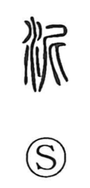

泥

Uncategorized
Kun: doro, nazumu | On: dei
mud ・ mire ・ to adhere ・ to cling
Explanation
A phono-semantic character: the water element combines with the form 尼, which itself joins 尸 and 匕 to depict two people leaning into one another in friendly intimacy. This shape supplies the sound and a nuance of pressing close or sticking. With water added, the graph pictures soil saturated and mixed with water—viscous, clinging mud. From this core image it names muddy ground and extends to senses of melding together, becoming familiar, and adhering or clinging.